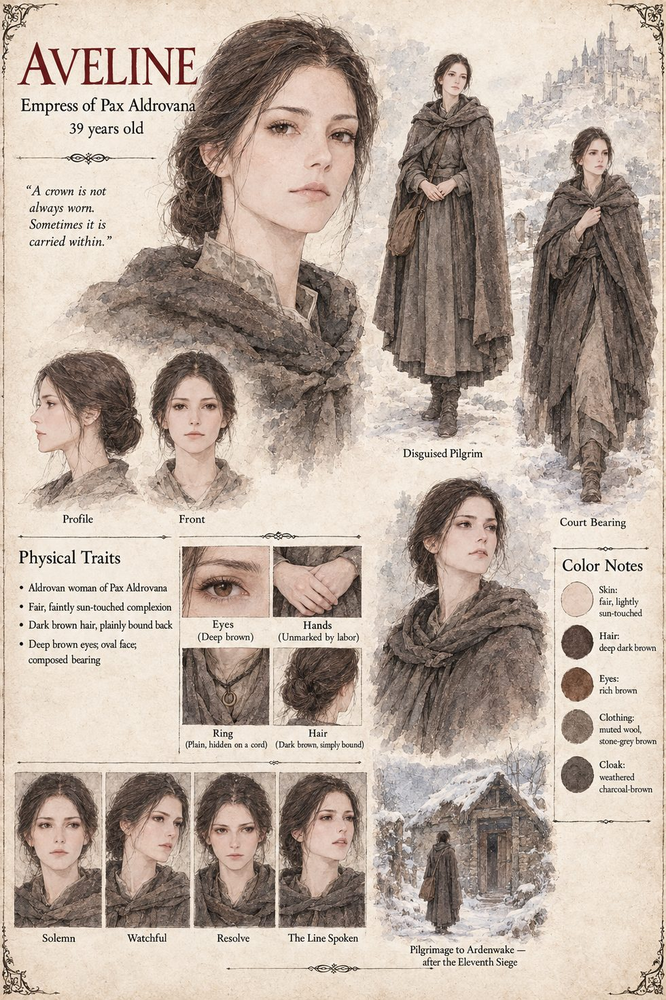

Aveline
Empress of Pax Aldrovana · 39 years old
Empress of Pax Aldrovana, an Aldrovan woman of thirty-nine with a fair, faintly sun-touched complexion, dark brown hair plainly bound back, deep brown eyes and a composed bearing. After the eleventh siege she makes the pilgrimage to Ardenwake in disguise, in muted stone-grey wool and a weathered charcoal-brown cloak, her hands unmarked by labor and her ring hidden on a cord. Her consort is Emperor Halvard.
The sheet's expressions run solemn, watchful, resolve, and one it labels “The Line Spoken.”
“A crown is not always worn. Sometimes it is carried within.”